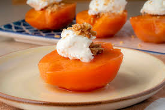

Ayva Tatlısı
Malzemeler
5-6 adet ayva
1 adet nar (1,5 su bardağı nar suyu)
2 su bardağı şeker
2-3 adet karanfil
Servis için;
Kaymak fıstık
Hazırlanışı
Ayvaları soyup ortadan keselim.
Ardından temizleyip limonlu suya kararmaması için alalım.
Soyduğumuz ayvanın kabuk ve çekirdeklerini direk tencereye alalım.
Ardından narın yarısını tencereye alalım.
Karanfili ekletip doğradığımız ayvaları tencereye alalım.
Üzerine nar suyu ve şeker serpelim.
1,5 su bardağı su ekleyip kapağını kapatalım.
Kaynamaya başlayınca kapağını açıp ayvaları ters çevirelim.
Bu işleri ayvalar yumuşamadan 1-2 defa yapalım.
Suyunu çekip köpük köpük olunca ocaktan alalım.Afiyet olsun.